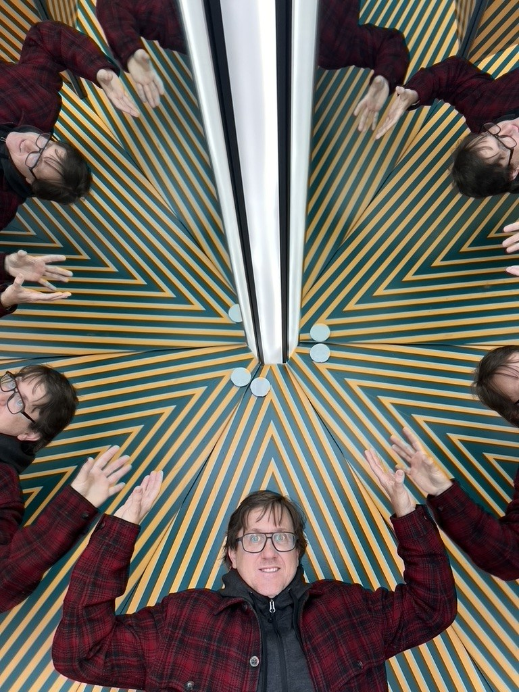

Come as you are.
Relational, contemplative, and psychodynamic therapy grounded in connection, curiosity, and the freedom to speak openly.
Get in touchRoom for all of who you are.

I believe meaningful change begins in a relationship where trust and safety make it possible to speak freely.
There is room here for whatever comes to mind—the difficult, the frightening, the embarrassing, the contradictory, and the unexpected. You do not need to edit yourself or find the right words.
My approach is relational, contemplative, and psychodynamic. Rather than standing outside your experience, I aim to join you in exploring your inner world with curiosity, care, and without judgment.
Individual psychotherapy for adults
I provide individual psychotherapy for adults ages 18 and older, offering a welcoming, nonjudgmental space to explore the full range of human experience.
My work includes extensive experience supporting people navigating psychosis, bipolar disorder, obsessive-compulsive disorder (OCD), autism spectrum conditions, severe depression, and questions and experiences related to sexuality and gender.
I have also worked extensively with older adults, accompanying people through the challenges and transitions of aging, as well as questions surrounding mortality, death, and dying.
While these experiences may bring particular challenges, I believe that no one can be understood through a diagnosis alone. My approach emphasizes getting to know the whole person—their history, relationships, circumstances, strengths, and unique ways of experiencing the world.
Together, we create space for honest conversation, greater understanding, and the possibility of meaningful change.
Sometimes laughter can be just as meaningful as tears.
Humor belongs in the therapeutic relationship, too. Shared laughter can bring warmth, perspective, and connection to places that otherwise feel hard to reach.
Finding a way forward, together.
Thoughtful consultation for individuals, families, and mental health professionals navigating complex mental health challenges.
For individuals & families
For nearly 25 years, I have helped individuals and families navigate the challenges of extreme states of mind and the often complicated landscape of mental health treatment.
Through extensive collaboration with psychiatrists, treatment facilities, educational consultants, and trustees, I have developed a broad understanding of treatment options and the challenges families face when making important decisions about care.
My role is to bring experience, perspective, and thoughtful collaboration to these decisions, helping people find a way forward that respects their individual circumstances and needs.
Residential treatment & care coordination
I help individuals and families explore residential treatment options, consider alternatives to hospitalization, and navigate transitions between different levels of care. My goal is to support informed, thoughtful decisions that respect each person’s circumstances and preferences.
For mental health professionals
I offer a collaborative space to think through complex clinical situations, therapeutic relationships, and questions about care. I place an emphasis on understanding the person within the larger context of their life, their social location, history of sanity, and their family system when helping make treatment decisions.
I respect individual choices about psychiatric medication. For people taking medication, I collaborate with their prescribing psychiatrists—with appropriate authorization—to support thoughtful treatment decisions. I also work with people who choose not to use medication.
Blake Baily, MA, LPC
Boulder, Colorado
Much of my professional life has been shaped by a simple conviction: meaningful psychological healing happens in relationship.
My work with Windhorse Community Services in Boulder, Colorado, has deepened my appreciation for the importance of genuine human connection, particularly when someone is experiencing profound psychological distress.
I believe that people are far more than their diagnoses or struggles, and that even in the midst of confusion and suffering, there is an inherent capacity for health, resilience, and growth.
Fees & Insurance
Individual psychotherapy
$200 per 50-minute session.
Consultation
$350 per hour.
Insurance & payment
My practice is private pay, and I do not bill insurance companies directly.
Depending on your insurance plan, you may be eligible for out-of-network reimbursement for psychotherapy services. I can provide a detailed invoice (superbill) for you to submit to your insurance provider.
Consultation services may not be eligible for insurance reimbursement. Please feel free to reach out with questions about fees or availability.
Begin a conversation.
I offer in-person psychotherapy in Boulder, Colorado, online sessions, and consultation for individuals, families, and professionals. Online availability may depend on where you are located.
If this approach resonates with you, I welcome you to reach out to learn more about working together.
Please avoid including sensitive personal or clinical information in your initial email. Email is not intended for emergencies.